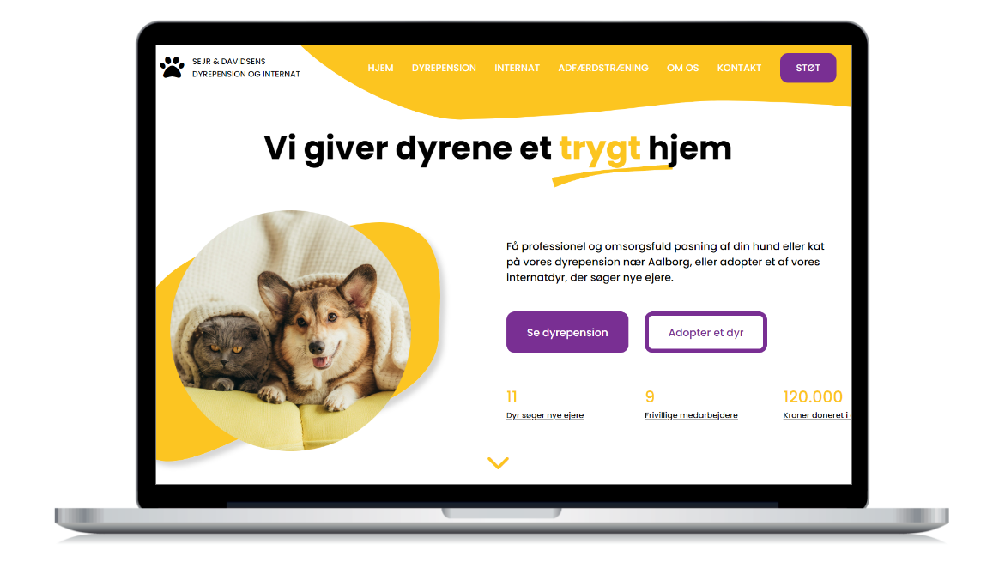

Projektets mål var at lave et Wordpress theme fra bunden med advanced custom fields og PHP.
Kunden var et dyreinternat, som havde brug for en ny hjemmeside, hvor det var muligt at få et overblik over adoptionsklare dyr, og at lave en blog, som kunne have både interne og eksterne skribenter.
Design og udvikling af Wordpress theme helt fra bunden med advanced custom fields og PHP.
Type:
Eksamen i valgfaget frontend-udvikling på 3. semester
Team:
Louise Lyck Dreehsen, Mathias Skovbo Johansen og Andreas Sigvald
Lavet med:
Adobe XD, Figjam, HTML, CSS, Javascript, PHP, Wordpress, Local og advanced custom fields.
Karakter:
12

Den store udfordring
Udfordringen i dette projekt var at udvikle et website fra bunden og lave det til et Wordpress theme med PHP og Javascript.
Vi havde tidligere brugt Wordpress som headless CMS, og kendte en smule til advanced custom fields, men det var første gang, at vi skulle arbejde med PHP og lave et theme med custom post types.
Det var en stor opgave, og derfor var designet og indholdet sekundært i dette projekt: fokus var på koden og at bygge CMS'et op, så det var brugervenligt.
Informations-arkitektur
I projektet skulle vi udvælge og realisere 5-6 sider, og vi havde frit valg ift. hvilke sider det skulle være.
Vi havde fået udleveret materiale om virksomhedens ønsker og tre personas, og ud fra de informationer, vi der kunne læse os til, lavede vi et content sitemap for det fulde site.
Herefter udvalgte vi de 5-6 sider, som vi mente var mest spændende ift. koden.
Valget faldt bl.a. på forsiden, en oversigt over dyr, der var tilgængelige for adoption, og en blogside, da de sider gav os mulighed for at lave og bruge custom post types, som er skræddersyede elementer i backenden i Wordpress, som giver kunden mulighed for at oprette specifikke elementer.
Designprocessen
Selv om designet var sekundært i dette projekt, skulle det stadig laves, og i gruppen blev vi enige om at lave et design, der skilte sig ud fra tidligere projekter og eksperimenterede med brugen af svg'er som sektionsskillere.
Det gjorde vi, fordi det gav os muligheden for at lære noget nyt ift. kodedelen.
Valget faldt på et farverigt design med en hero, hvor der var to CTA-indgange til virksomheden, som bestod af to dele: et dyreinternat og en kommerciel dyrepension.
Vi startede designprocessen ved at skitsere på papir og derefter øge fidelity med en wireframe og efterfølgende hifi-mockup i Adobe XD.
Wireframe.Mockup.
Indholdsudvikling med custom post types og advanced custom fields
Nu begyndte den spændende del af projektet: Arbejdet med Wordpress.
Vi havde tidligere brugt Wordpress som headless CMS, så vi kendte til advanced custom fields i forvejen, men det var første gang, vi skulle oprette custom post types og lave et helt theme med PHP.
Vi besluttede at oprette custom post types for adoptionsdyrene og for blogindlægenne, da det ville give kunden et overskueligt og brugervenligt CMS, hvor det efterfølgende var muligt at lave brugerroller til medarbejderne med særskilt adgang til de dele af siden, de skulle kunne redigere og skrive til.
Oversigt over adoptionsdyrene (med search-funktion).Sideopbygningen for det enkelte adoptionsdyr.
Kode med versionsstyring i Github
Da realiseringen af websitet skulle gå i gang, startede vi med at hardcode hele siden. Vi brugte under hele processen Github til at versionsstyre.
Derefter lavde vi al PHP, som dynamisk kunne hente indhold fra vores Wordpress CMS. Vi lavede også en søgefunktion, som tog udgangspunkt i Wordpress' egen søgefunktion.
Til sidste lavede vi funktioner i Javascript. Vi lavede en slider til testimonials og en collapsible accordion for at dele store mængder af tekst op.
Vi nåede ikke at lave brugerroller, men der lå en plan klar for, at vi ville oprette en brugerrolle for bloggere, som kun havde adgang til at oprette blogindlæg, og en brugerrolle for de ansatte på internatet, som gav adgang til at oprette nye adoptionsdyr.
Konklusion
Vi kom i mål med at lave en prototype på et Wordpress theme til Sejr og Davidsens dyrepension og -internat.
Vi var tilfreds med resultatet, som var en dynamisk og brugervenlig hjemmeside med en overskuelig informationsarkitektur og et spændende design.